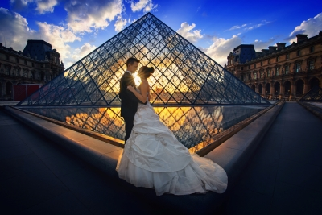
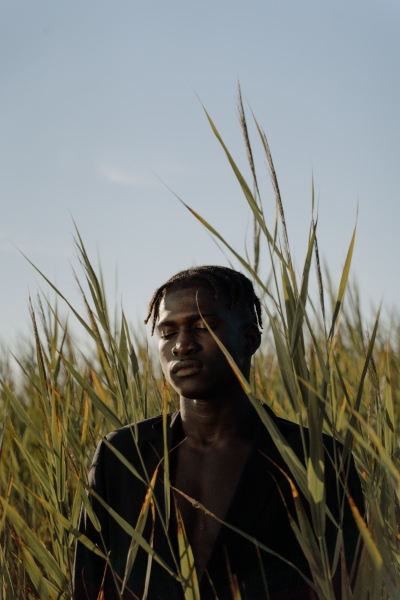
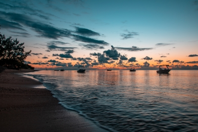

wat te verwachten
Bruiloften
het draait allemaal om vertrouwen en loslaten. Maak je geen zorgen, we komen er. Als je denkt dat je raar bent, ben je dat niet. Denk aan het als vrienden die uit hangen. Het enige ding dat zal veranderen is dat ik een camera op me zal hebben. U moet niet wat wilde liefdedans uitvoeren en Er is zeker geen geheime houding die je moet doen. geloof me, het is makkelijker dan u denkt.
Zodat ik mooie beelden voor jullie kan maken, is het zo belangrijk dat we klikken. Als we in dezelfde stad zijn, laten we iets gaan drinken. Als we dat niet zijn, laten we dan een facetime-oproep doen en toch nog een geweldige tijd doorbrengen. Ik wil dat mijn koppels het gevoel hebben dat we in het echte leven aan de kant van dit hele fotoding kunnen rondhangen.
We gaan dicht en persoonlijk zijn, dus het is nogal cruciaal dat we graag om elkaar heen zijn. Het laatste wat ik wil is dat jullie gewoon een willekeurige fotograaf met een camera boeken
We hoeven niet op de top van de Mount Everest te fotograferen voor epische foto's. Begrijp me niet verkeerd, ik ben een uitloper voor een goede zonsondergang op een heuveltop of een geheim veld in het midden van nergens, maar de beste foto's zijn soms die niet zo hard proberen.
Its' not weird to be weird
- John Lennon.
The whole point of taking pictures is so that you don't have to explain things with words
- Elliott Erwitt.
Portretten en mode fotoshoots
voor je sessie kunnen we praten over de leuke dingen zoals de locatie, enz... . omdat ik overal ter wereld beschikbaar ben, kunnen we samen bespreken waar je wilt worden gefotografeerd. als je liever meer van binnen dan van buiten wordt gefotografeerd, kan ik een studio voor de fotoshoot regelen
Dan is de meest voorkomende vraag die ik krijg: Wat moet ik dragen!?het is het beste om zowel dressy als meer casual outfits mee te nemen, zodat je een goede variëteit hebt. Lagen zijn je vriend. Ik adviseer ook om neutrale kleuren te dragen. Wees niet bang om heldere kleuren en patronen overal te dragen, maar als je het veilig wilt spelen zullen neutrale kleuren je beste weddenschap blijven. Draag iets dat vertegenwoordigt wie je bent en iets dat je graag draagt.
Auto evenementen
Bent u het moe om amateur-autofotografen in te huren? dan bent u op de juiste plek! voordat het auto-evenement plaatsvindt, kunnen we bespreken wat voor soort foto's u wilt dat ik neem, bijvoorbeeld: profielfoto's van de zijkant, het exterieur, het interieur, de motor, mensen die het auto-evenement bezoeken.
tijdens het auto-evenement ga ik rond om foto's te maken, dus u zult me niet veel zien! als u wilt dat ik een foto van een auto neem op een bepaald moment en dat ik niet in u gezelschap ben? kunt u mij altijd bellen tijdens het evenement.
Aanpasbaar pakket
je hebt niet gevonden voor wat je kwam voor? maak je geen zorgen, aanpasbare pakketten zijn ook beschikbaar! als je foto's van je huisdier wilt maken of een ander type fotografiestijl wilt dat niet op mijn website staat, kun je me vragen en zal ik steeds graag foto's nemen voor u! omdat ik niet gespecialiseerd ben in elke fotografiestijl is de prijsofferte volledig aan u. geïnteresseerd in deze complete aanpasbare service? dan zouden we zo snel mogelijk samen moeten werken!
landschapsfotografie
voor de landschapsfotografie gebeurt dit in 3 delen. het eerste deel is mij contacteren via mijn contactpagina. vervolgens zullen we meer in detail spreken via facetime. we zullen het hebben over waar het landschap zich bevindt, welke stijl van foto's u wilt dat ik neem, om welk uur ik ter-plekke moet zijn en hoe lang ik daar blijf en of er nog meer opties nodig zijn. voor het laatste deel kunt u kiezen welke foto('s) de stijl van de frame, de breedte en hoogte van uw foto('s) die u wilt kopen.